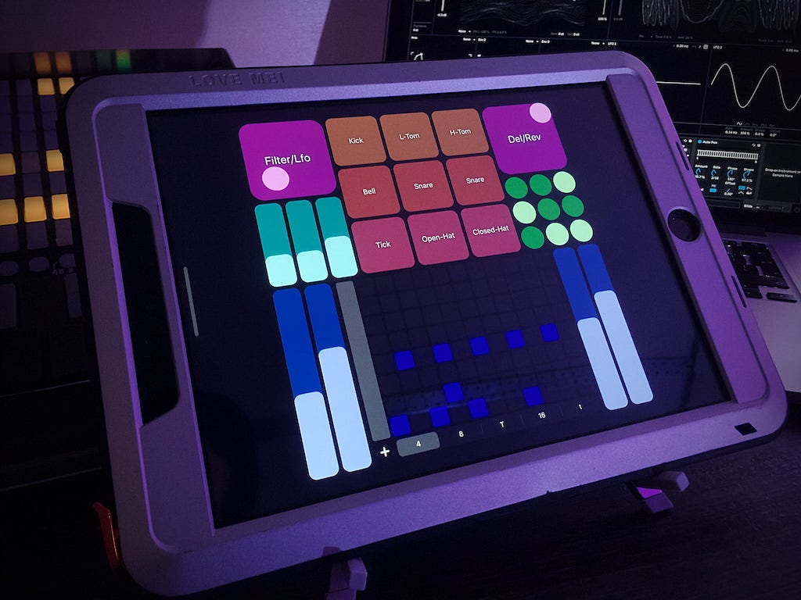
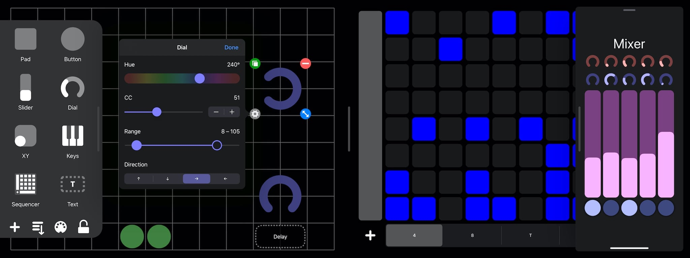

MiDIY

MIDIy (currently in beta) Turns an iOS device into virtual MIDI control surface. Drag pads, buttons, sliders and other elements to create your own DIY controller. Connect to DAWs trough WiFi, USB cable or bluetooth. Connecting using lightning/USB-C to midi adapter should also be possible, though more testing is needed.
Request BETA access ＞